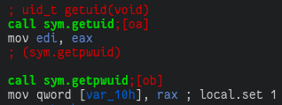
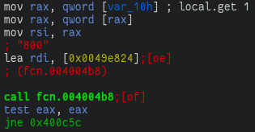
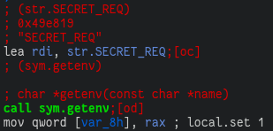
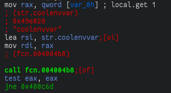
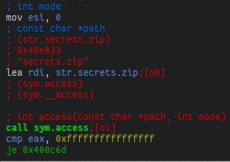
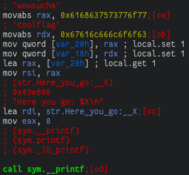
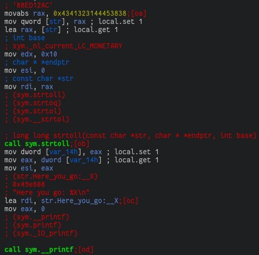

Checks
Checks is a rather simple program, it performs a few simple checks but took a while to fully understand as it is statically linked, preventing use of ltrace to trace libc calls.
First Check
The first check the program performs is to retrieve the username of the user running the program.

And to then compare it with the string '800'.

To bypass this check, I opted to replace the username string with '800' inside gdb, however you could also just create another user account named '800'.
Second Check
The second check performed is to test if the value of the env var SECRET_REQ is equal to coolenvvar.


Getting past this check is simply setting the env var SECRET_REQ=coolenvvar.
Third Check
This check uses the access(const char *path, int mode) function to test if the file ./secrets.zip is readable.

However the program never attempts to read this file so simply touch secrets.zip is enough to complete this check.
Completion
Once all the checks have been passed, the program prints the flag. The flag is not computed from the results of the three checks and so all checks can actually just be skipped.
Interestingly, the program provided for this challenge was initially broken, the flag printing code was as follows:

Which constructs a string on the stack by writing two 8-byte values, then passing the address of the first byte of the string on the stack to printf. This is broken since the address of a value on the stack is dependent on the stack offset before the function is invoked, which is ultimately dependent on the base address the stack is mapped to which is either randomized between invokations if ASLR is enabled, or at the same system-dependent offset if ASLR is disabled.
Because of this it was not possible to solve the first given binary as the program would have to be run with the stack mapped to the same region as when the challenge developers ran the program to create the flag for the challenge.
At some point the binary was updated and the flag printing code was changed to:

Which first loads the string '88ED12AC' onto the stack and passes a pointer to it to strtoll with the base parameter being 0x10 = 16 which converts the string as a base16 representation into an integer.
The decoded integer is then printed back in hex representation by printf with the %X format code.
So yes, most of this code is not necessary; in fact, the flag can be gained without even running the program with the second binary ¯_(ツ)_/¯.